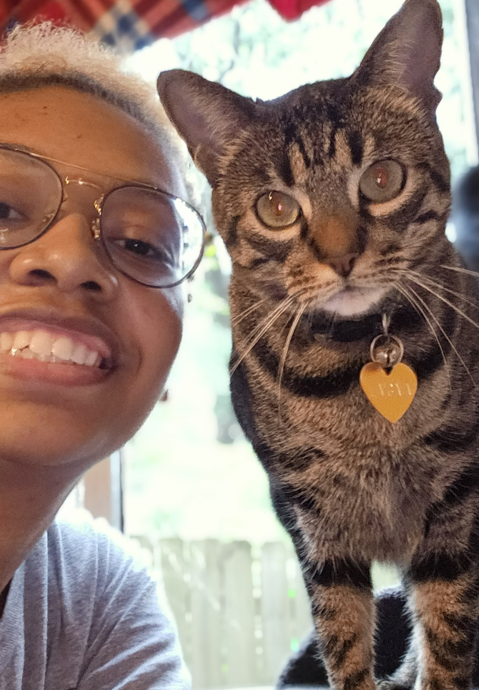
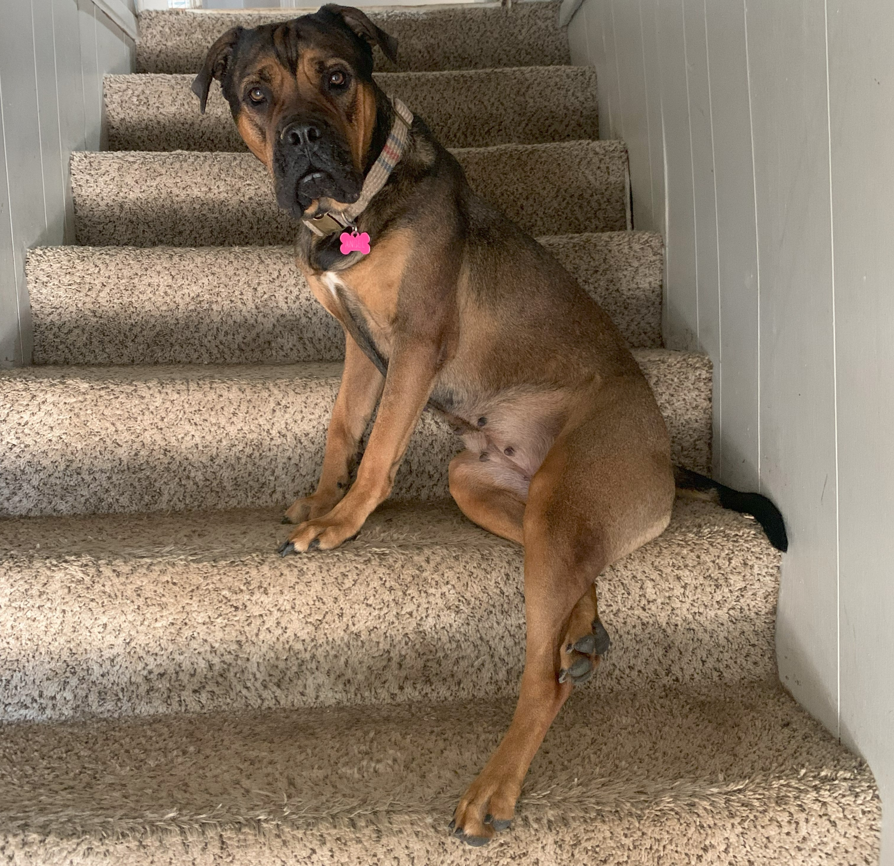
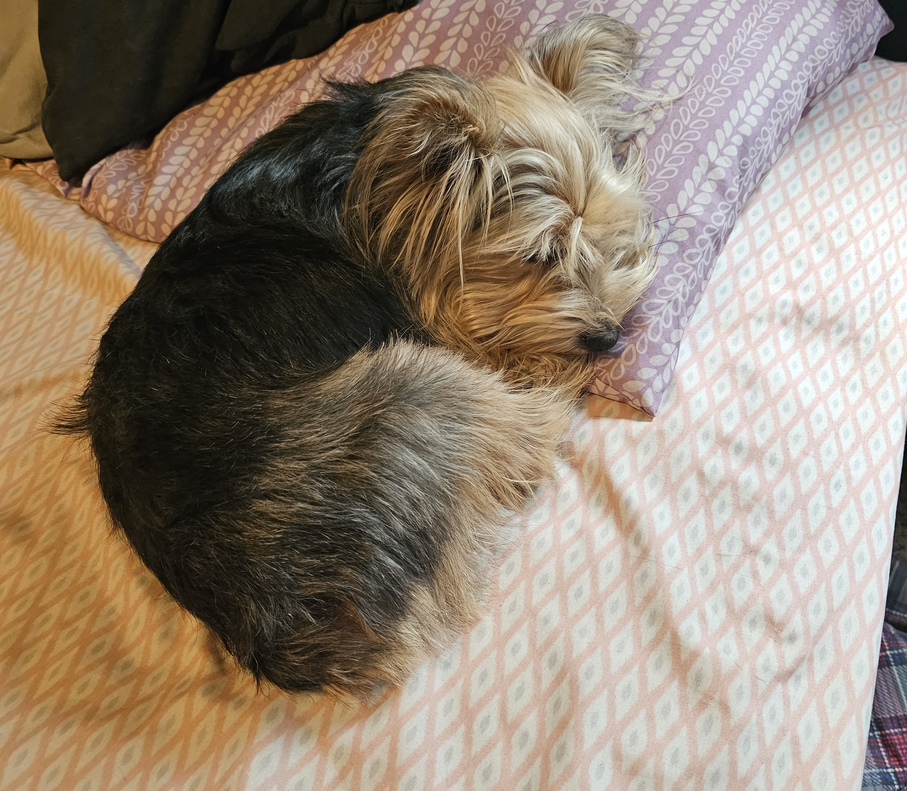

About Portfolio
In a combination of academia and technology, this portfolio reflects two distinct yet interconnected facets of my studies and hobbies. In the realm of education, English Composition I honed my practical writing skills. Meanwhile, in the world of development, I've crafted a user-friendly web platform that signifies a pivotal milestone in my web-development journey.
About Class
English Composition I focused on the development of practical writing skills throughout the semester. The primary focus was on comprehending the utility of writing and reading as functional tools. Considerable emphasis was placed on the mechanics of writing, introducing a toolkit comprising flexible strategies to enhance overall writing proficiency.
The semester revolved around crafting three essays: one delving into personal beliefs using the “This I Believe” structure, another rhetorically analyzing the various details of an advertisement, and an exploratory essay with a delayed thesis exploring the dynamics of growth and fixed mindsets. These assignments required a delicate balance between personal conviction and effective articulation, prompting the adoption of writing styles that provided thoughtful and seamless connection with the intended audience. See English Composition I Reflection .
About Development
The front-end constitutes everything users see and interact with on a website — buttons, images, and the overall layout. In contrast, the back-end functions as the engine behind the scenes, managing databases, processing data, and ensuring seamless interactions when users submit forms or request information. Essentially, it oversees the server-side operations, guaranteeing the website functions correctly and delivers accurate information.
I've designed this portfolio as a practical and user-friendly web platform. The front-end is constructed using HTML, CSS, and JavaScript, with a specific emphasis on responsiveness and accessibility. This ensures a smooth experience for users across various devices, prioritizing usability for as many people on as many devices as possible.
For the back-end, I've utilized JavaScript with Node.js and Express. Through the implementation of routes and controllers, I've structured the backend to enhance user experiences, incorporating features like URL routing for effortless navigation.
This project marks a significant milestone, as it is my first website that incorporates my proficiency in both user-experience and server navigation. It was the push I needed to take a greater leap into my journey of web development. There's no better way to improve than through challenge; practice doesn't make perfect, but it does make progress.
About Me

Hiya, I'm Ricki! I'm a first year student at Pulaski Tech, studying computer
programming.
 For the past three years I've been independently studying web development.
It's been an up and down journey, but it's allowed me to delve into both
front-end (how a webpage looks and acts) and back-end (how and where information
is stored) technologies.
For the past three years I've been independently studying web development.
It's been an up and down journey, but it's allowed me to delve into both
front-end (how a webpage looks and acts) and back-end (how and where information
is stored) technologies.
Creating this portfolio provided me with a fantastic opportunity to enhance my front-end and back-end development skills. My current goal is to become a full-stack web developer, creating and navigating both the visual elements of web design and the labyrinth of server-side development.
No matter how much I want to, I don't sit behind a desk all day. For that I thank my cat, La'Gaia, and my two dogs, Angel (Cane Corso) and Ace (Yorkie). Even if I wanted to ignore them and continue working, they'll just sit in my lap or yell at me.
 